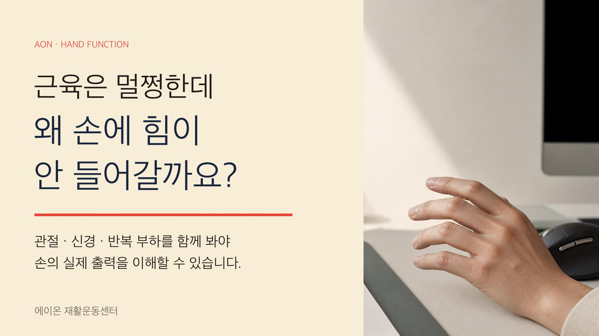
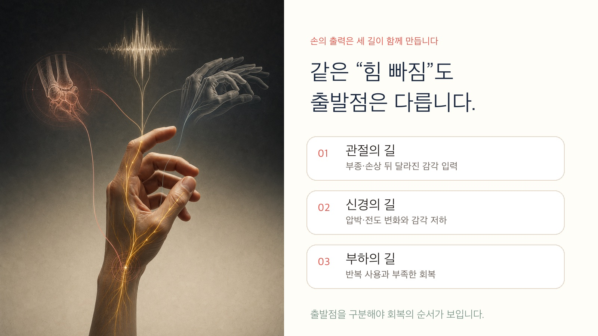
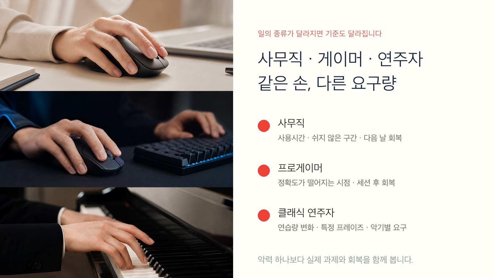
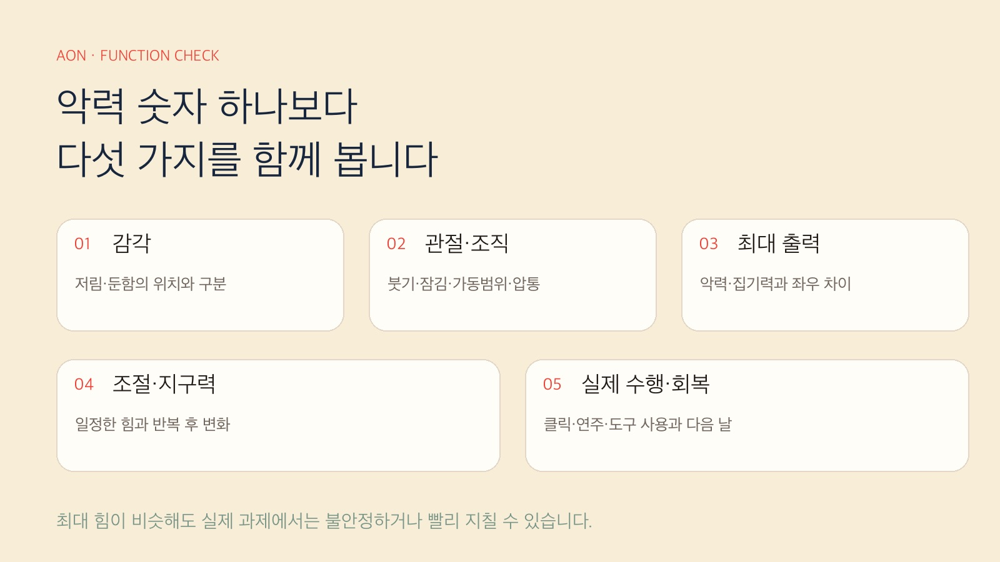

오전에는 괜찮았는데 오후가 되면 마우스를 쥔 손이 무겁습니다.
게임 초반에는 정확하던 클릭이 후반으로 갈수록 흔들리고, 피아노나 현악기를 연주할 때는 빠른 구간에서 손가락이 마음처럼 따라오지 않습니다. 병뚜껑이나 컵처럼 평소에는 아무렇지 않던 물건도 어느 날 불안하게 느껴질 수 있습니다.
이럴 때 가장 먼저 떠오르는 생각은 보통 하나입니다.
하지만 손의 힘은 근육량 하나로 결정되지 않습니다. 관절에서 들어오는 정보, 신경의 전달, 반복 부하와 회복 상태가 함께 맞아야 원하는 힘을 정확하게 꺼낼 수 있습니다.
손의 출력은 세 개의 길이 함께 만듭니다

손을 하나의 시스템으로 보면 이해하기 쉽습니다.
1. 관절의 길
손상·부종·염증으로 관절에서 들어오는 감각 신호가 달라지면, 해당 관절을 움직이는 근육을 충분히 활성화하기 어려울 수 있습니다.
2. 신경의 길
수근관에서 정중신경이 눌리는 것처럼 신경의 전달과 감각 입력이 달라지면 저림, 감각 저하, 엄지 기능과 손재주 저하가 함께 나타날 수 있습니다.
3. 부하의 길
오래 버티는 자세, 고빈도 반복, 회복보다 많은 사용량이 쌓이면 통증과 피로뿐 아니라 정확도와 일정한 힘도 떨어질 수 있습니다.
세 길의 출발점은 다르지만 마지막에는 모두 근육을 언제, 얼마나, 얼마나 일정하게 사용할 것인가라는 운동출력의 문제로 이어질 수 있습니다.
그래서 같은 “힘 빠짐”이라도 누구는 관절 상태를 먼저 봐야 하고, 누구는 신경을 확인해야 하며, 누구는 작업량과 회복의 균형을 바꾸는 것이 먼저일 수 있습니다.
AMI, 손에 힘이 빠지는 이유가 될 수 있을까요?
AMI는 관절원성 근육 억제(arthrogenic muscle inhibition)의 약자입니다. 관절이 붓거나 손상된 뒤 관절에서 들어오는 감각 신호가 달라지고, 척수와 중추신경계의 조절을 거치면서 해당 관절을 움직이는 근육의 자발적 활성 능력이 낮아지는 현상을 말합니다.
개념 자체는 무릎에만 한정되지 않습니다. 발목 불안정성에서도 관련 억제 현상이 연구됐습니다. 다만 연구량과 측정법은 무릎이 압도적으로 많고, 손목과 손에서 같은 현상을 직접 측정한 근거는 아직 충분하지 않습니다.
따라서 두 문장을 함께 기억해야 합니다.
흔히 말하는 몸의 ‘안전 모드’는 이해를 돕는 비유입니다. 뇌에 하나의 차단 스위치가 있다는 뜻이 아니라, 관절 감각 입력과 척수 반사, 감각 처리, 운동단위 동원 전략이 함께 달라질 수 있다는 의미에 가깝습니다.
손가락이 저리다면 같은 문제일까요?
수근관증후군은 AMI와 출발점이 다릅니다. 수근관 안에서 정중신경이 압박되며 시작합니다.
전도가 느려지고 엄지·검지·중지 쪽 감각이 달라지면 손가락의 위치와 접촉을 판단하는 정보의 질도 떨어질 수 있습니다. 연구에서는 수근관증후군 환자의 손가락 감각을 처리하는 뇌의 표현이 대조군보다 덜 분리되어 있었고, 이러한 차이가 감각 변별과 반복 집기 수행과 연관됐습니다.
이 결과는 “뇌가 손상됐다”는 뜻이 아닙니다. 손목에서 계속 달라진 감각 입력을 처리하면서 감각지도가 재조직될 수 있다는 뜻입니다. 또한 단면연구이므로 무엇이 먼저였는지 단정할 수도 없습니다.
정리하면 이렇습니다.
사무직·게이머·연주자에게는 어떻게 나타날까요?

사무직
마우스를 오래 잡고 있는 날 전완이 묵직해지고 클릭이 둔해질 수 있습니다. “자세가 나빠서 망가졌다”고 바로 결론 내리기보다 마우스 사용시간, 쉬지 않고 작업한 구간, 증상이 시작되는 시점과 다음 날 회복을 함께 기록하는 편이 낫습니다.
프로게이머
프로게이머는 큰 힘보다 작은 힘을 빠르고 일정하게 반복해야 합니다. 중요한 것은 손목 통증 유병률 숫자 하나가 아니라 내 세션의 몇 분째부터 정확도와 편안함이 떨어지는지, 쉬고 난 뒤 기준선으로 돌아오는지를 확인하는 것입니다.
클래식 연주자
연주자는 악기와 파트에 따라 전혀 다른 자세와 반복량을 감당합니다. 연습량이 갑자기 늘었는지, 특정 프레이즈에서 힘과 정확도가 무너지는지, 다음 연습까지 회복되는지를 악기별로 살펴야 합니다.
악력 숫자 하나보다 다섯 가지를 봅니다

- 감각 — 어느 손가락이 저리거나 둔한가? 위치를 구분할 수 있는가?
- 관절·조직 — 붓기, 잠김, 펴짐 제한, 국소 압통이 있는가?
- 최대 출력 — 악력과 집기력이 좌우·평소 기준과 얼마나 다른가?
- 조절과 지구력 — 일정한 힘을 유지하는가? 반복할수록 흔들리거나 급격히 감소하는가?
- 실제 수행과 회복 — 클릭·타이핑·연주·도구 사용이 언제 무너지며 다음 날 회복되는가?
통증 연구에서는 통증이 있을 때 힘을 일정하게 조절하는 변동성이 커지는 경향이 확인됐습니다. 그래서 최대 악력이 비슷하더라도 실제 과제에서는 불안정하거나 빨리 지칠 수 있습니다.
회복은 ‘세게 쥐기’보다 순서를 되찾는 과정입니다
- 작업량, 자세, 부종과 통증 반응을 조절합니다.
- 억지로 끝범위를 밀기보다 편안한 범위에서 움직임을 회복합니다.
- 최대 힘보다 흔들리지 않는 낮은 힘부터 연습합니다.
- 저항, 반복, 속도와 지속시간을 한 번에 하나씩 올립니다.
- 마우스, 게임, 악기, 운동과 생활동작에 단계적으로 연결합니다.
이 순서는 모든 손 질환에 똑같이 적용하는 처방전이 아닙니다. 관절 문제인지, 신경 압박인지, 힘줄 잠김인지, 단순 피로와 부하 문제인지에 따라 운동과 의학적 평가의 우선순위가 달라집니다.
이런 신호가 있다면 운동보다 평가가 먼저입니다
- 저림이나 감각 소실이 점점 심해질 때
- 엄지두덩이 눈에 띄게 꺼지거나 엄지 맞섬이 약해질 때
- 물건을 반복해서 떨어뜨릴 때
- 손가락이 잠겨 잘 펴지지 않을 때
- 외상 후 힘이 갑자기 크게 감소했을 때
- 심한 붓기·열감·색 변화가 동반될 때
손에 힘이 빠졌다는 말은 하나의 진단명이 아닙니다.
에이온 재활운동센터는 악력 한 번으로 결론을 내리기보다 관절·신경·조직·통증·부하의 출발점을 구분하고, 최대 힘과 조절 능력, 실제 수행과 회복을 함께 확인합니다.
※ 이 글은 건강정보 제공 목적이며 개인의 진단이나 치료를 대신하지 않습니다.
참고문헌
- Hopkins JT, et al. *J Athl Train.* 2002;37(1):25-31. PMID 12937440. https://pubmed.ncbi.nlm.nih.gov/12937440/
- Lepley AS, Lepley LK. *J Sport Rehabil.* 2021;31(6):707-716. PMID 34470911. https://pubmed.ncbi.nlm.nih.gov/34470911/
- McVey ED, et al. *Foot Ankle Int.* 2005;26(12):1055-1061. PMID 16390639. https://pubmed.ncbi.nlm.nih.gov/16390639/
- Maeda Y, et al. *Brain.* 2014;137(Pt 6):1741-1752. PMID 24740988. https://pubmed.ncbi.nlm.nih.gov/24740988/
- Arvanitidis M, et al. *Eur J Pain.* 2025;29(2):e4716. PMID 39176440. https://pubmed.ncbi.nlm.nih.gov/39176440/
- IJmker S, et al. *Occup Environ Med.* 2007;64(4):211-222. PMID 17095550. https://pubmed.ncbi.nlm.nih.gov/17095550/
- Soffner M, et al. *Sports Med Open.* 2026;12(1):1. PMID 41483384. https://pubmed.ncbi.nlm.nih.gov/41483384/
- Kok LM, et al. *Int Arch Occup Environ Health.* 2016;89(3):373-396. PMID 26563718. https://pubmed.ncbi.nlm.nih.gov/26563718/
에이온 센터 이야기: https://blog.naver.com/aon_physio/223946815713
에이온 상담·이용 안내: https://blog.naver.com/aon_physio/223946817857
#손힘빠짐 #악력저하 #수근관증후군 #손목통증 #AMI #프로게이머재활 #연주자재활 #사무직손통증 #손재활 #송파재활 #석촌재활 #에이온재활운동센터